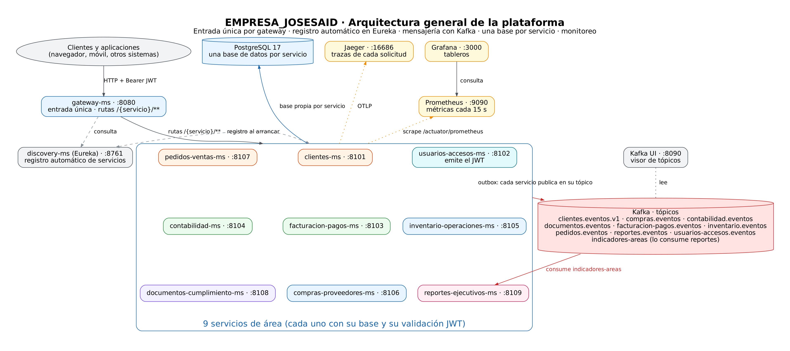

Un ecosistema de once microservicios Spring Boot para las operaciones centrales de una empresa: ventas, compras, inventario, facturación, contabilidad, cumplimiento y reportes ejecutivos.
Spring Boot 4 · Java 21 · Docker ComposeNueve servicios de negocio, más un registro de servicios (Eureka) y un solo API gateway. Cada servicio de negocio tiene su propia base de datos y usuario en PostgreSQL.
Los tokens de acceso se firman con RS256. Los servicios los validan con la clave pública de un endpoint JWKS, así que no comparten ningún secreto. Los endpoints internos no son visibles desde fuera del gateway.
Encabezado opcional Idempotency-Key en pedidos, pagos, pólizas, movimientos de inventario y órdenes de compra. Una petición repetida devuelve la respuesta original; las claves son válidas por 24 horas.
Cifrado AES-256 para los datos fiscales de proveedores y los documentos legales, con un índice HMAC para seguir encontrando registros sin exponer los valores originales.
Métricas con Prometheus, tableros en Grafana, trazas entre servicios con Jaeger e interfaz de Kafka para revisar topics y mensajes.
| Servicio | Responsabilidad | Acceso |
|---|---|---|
clientes-ms | API de gestión de clientes | Por el gateway |
usuarios-accesos-ms | Usuarios, roles, emisión de tokens RS256 y JWKS | Solo interno |
facturacion-pagos-ms | Comprobantes, pagos y cancelaciones | Por el gateway |
contabilidad-ms | Libro contable, pólizas, cierre de periodos y balanza de comprobación | Por el gateway |
inventario-operaciones-ms | Existencias, reservas, lotes y órdenes de operación | Por el gateway |
compras-proveedores-ms | Proveedores con datos fiscales cifrados, órdenes de compra y recepciones | Por el gateway |
pedidos-ventas-ms | Cotizaciones, pedidos de venta, devoluciones y métricas de ventas | Por el gateway |
documentos-cumplimiento-ms | Documentos legales con versiones, cifrado, vencimientos y retención | Por el gateway |
reportes-ejecutivos-ms | KPI por periodo, cierre de reportes y exportación | Por el gateway |
discovery-ms | Registro de servicios Eureka | Puerto 8761 |
gateway-ms | Punto de entrada único que enruta a los servicios registrados | Puerto 8080 |

Requisitos: Docker 24+ y Docker Compose 2.20+. Puertos libres: 5432, 8080 y 9092.
docker network create empresa-net # red externa compartida, una sola vez
cp .env.example .env # completa las contraseñas y claves
cp clientes-ms/.env.example clientes-ms/.env
docker compose up -d --buildGenera contraseñas con openssl rand -base64 24 y claves de cifrado con openssl rand -base64 32. La lista completa de variables de entorno está en el README.
| Herramienta | Puerto |
|---|---|
| Gateway (punto de entrada) | 8080 |
| Panel de Eureka | 8761 |
| Grafana | 3000 |
| Prometheus | 9090 |
| Jaeger | 16686 |
| Kafka UI | 8090 |
| PostgreSQL 17 | 5432 |
| Kafka 4.0 (acceso desde el host) | 9092 |